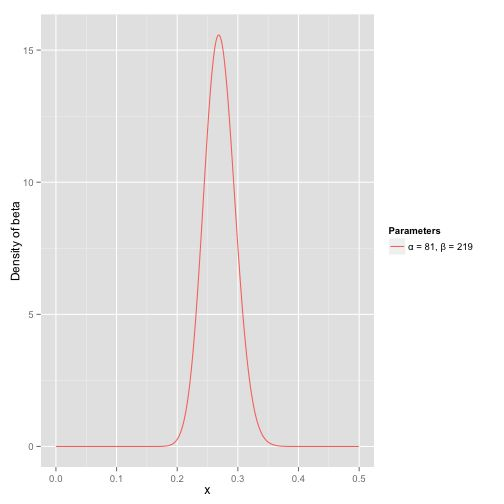
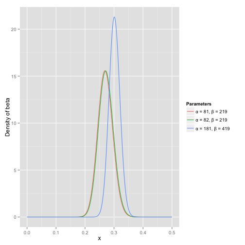
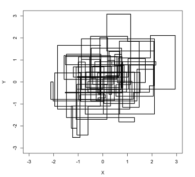
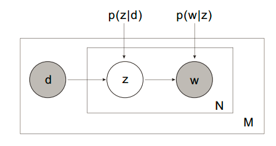
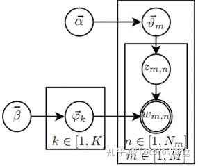

LDA详解
学习LDA，首先应该要了解相关的概率分布，了解为什么使用Dirichlet分布和吉布斯采样，然后明白LDA源自于PLSA， 再学习LDA的建模流程，所以下文主要从这几个方向说起。
第一话：概率分布
核心点：Dirichlet分布其实也是采样出一个值（向量），从这个意义上来说，它其实和其它分布并无太大不同，那为什么大家都说Dirichlet分布式分布的分布呢？**因为Dirichlet分布出现的场景，总是用于生成别的分布（更确切地说，总是用于生成Multinomial分布）**Dirichlet分布得到的向量各个分量的和是1，这个向量可以作为Multinomial分布的参数，所以我们说Dirichlet能够生成Multinomial分布，也就是分布的分布
1.1. 多项分布
多项式分布(Multinomial Distribution)是二项式分布的推广。二项式做n次伯努利实验，规定了每次试验的结果只有两个，如果现在还是做n次试验，只不过每次试验的结果可以有多m个，且m个结果发生的概率互斥且和为1，则发生其中一个结果X次的概率就是多项式分布。
在二项分布中，事件只有两种可能，假定第一种可能发生概率为$p$，则另一件为$1-p$，那么n此实验后后k次发生第一种事件的概率为$P{X=k}=C_{n}^{k}p^{k}(i-p)^{n-k}$
在多项式分布中，事件是有多个的，且每个事件会产生$k_i$次的概率是：$P{X_1=k_1,X_2=k_2,,,,X_n=k_n}=\frac{n!}{k_1!k_2!…k_n!}\prod_{i=0}^{n}p_{i}^{k_i}$ 其中$\sum_{i=0}^{n}k_i=n$
多项分布对其每一个结果都有均值和方差，分别为 :
$E[x_i]=np_i$
$var[x_i]=np_i(1-p_i)$
1.2. Gamma分布
$\Gamma(x)=\int_{0}^{\infty}t^{x-1}e^{-t}dt$
它的最大特点:$\Gamma(x+1)=x\Gamma(x)$
据PRML第71页(2.14)式，Gamma函数在Beta分布和Dirichlet分布中起到了归一化的作用。
1.3. Dirichlet分布
Dirichlet分布是关于定义在区间[0,1]上的多个随机变量的联合概率分布 ,假定有d个变量$\mu_i$,并且$\sum_{i=1}^{d}\mu_i=1$ ，记$\mu=(\mu_1,\mu_2,…\mu_d)$，每个$\mu_i$对应一个参数$\alpha_i>0$ ,记$\alpha=(\alpha_1,\alpha_2,…\alpha_d)$，$\widehat\alpha=\sum_{i=1}^{d}\alpha_i$，那么它的概率密度函数为：$p(\mu|\alpha)=Dir(\mu|\alpha)=\frac{ \Gamma(\widehat\alpha)}{\Gamma(\alpha_1)\Gamma(\alpha_2)…\Gamma(\alpha_d)}\prod_{i=1}^{d}\mu_{i}^{\alpha_{i-1}}$
Dirichlet分布的每一个随机变量具有统计量如下：
$E[\mu_i]=\frac{\alpha_i}{\widehat\alpha}$
$var(\mu_i)=\frac{\alpha_i(\widehat\alpha-\alpha_i)}{\widehat\alpha^{2}(\widehat\alpha+1)}$
$cov(\mu_i, \mu_j)=\frac{\alpha_i\alpha_j}{\widehat\alpha^{2}(\widehat\alpha+1)}$
由于Dirichlet分布描述的是多个定义于区间[0,1]的随机变量的概率分布，所以通常将其用作多项分布参数$\mu_{i}$ 的概率分布，也就是上面1中的每个事件的概率值。
1.4. Beta分布
Beta分布描述的是定义在区间[0,1]上随机变量的概率分布， beta分布的定义域是(0,1) 这就跟概率的范围是一样的。 由两个参数$\alpha$ >0和$\beta$ >0决定，通常记为$\mu∼Beta(\mu|\alpha,\beta)$，其概率密度函数如下 :$P(\mu|\alpha,\beta)=\frac{\Gamma(\alpha+\beta)}{\Gamma(\alpha)+\Gamma(\beta)}\mu^{\alpha-1}(1-\mu)^{\beta-1}$
$E[\mu]=\frac{\alpha}{\alpha+\beta}$
$var[\mu]=\frac{\alpha\beta}{(\alpha+\beta)^{2}(\alpha+\beta+1)}$
这里举个例子，原文在最下面参考中，说是判断一个人打球的击中率，正常人一般在0.277左右，当有一场比赛该人员只打了一次就中了，如果这样算就是100%是不对的，他应该是在以前水平的基础上建模，然后用这次的数据进行修正；那么以前的击中率也不应该直接是一个值，在未知的常态下它应该是一个概率分布，比如最大可能是0.27这样子。如下的Beta分布表示当$\alpha=81$,$\beta=219$时的分布，它表示的是概率分布的概率，这里举例来说x=0.27的概率（可能性）最高，正好用来表示过去该人员的一个水平概率分布。

其中$E[X]=\frac{\alpha}{\alpha+\beta}=0.27$ , 从图中可以看到这个分布主要落在了(0.2,0.35)间，这是从经验中得出的合理的范围。
当该人员新参加一场比赛, 假设一共打了300次，其中击中了100次，200次没击中，那么这一新分布就是： $beta(81+100, 219+200)$ , 注意到这个曲线变得更加尖，并且平移到了一个右边的位置，表示比平均水平要高。 而且通过这样的方式进行击中率计算，会小于直接按照频次计算，进行了平滑操作。
之所以上式直接相加是因为 beta分布与二项分布的共轭先验性质。这里也需要清楚多项分布和Dirichlet分布也属于共轭性质

1.5. 吉布斯采样
在已知条件概率分布而不知联合概率分布的情况下，如何较为可靠的采样出一批数据。
MCMC：Markov链通过转移概率矩阵可以收敛到稳定的概率分布(类似于pagerank收敛)。这意味着MCMC可以借助Markov链的平稳分布特性模拟高维概率分布p(x)；当Markov链经过burn-in阶段，消除初始参数的影响，到达平稳状态后，每一次状态转移都可以生成待模拟分布的一个样本。
而Gibbs抽样是MCMC的一个特例，它交替的固定某一维度$x_i$，然后通过其他维度$x_j$的值来抽样该维度的值，注意，gibbs采样只对高维（2维以上）情况有效。
基本算法如下：
针对样本$X={x_1, x_2, …, x_n}$共有n个维度，每次针对单个维度$x_k$ 固定住其他维度单独更新该维度，迭代T次后趋于平稳，即可进行采样。
for t in T: # 迭代次数
for k in n: # 每次选择一个维度进行更新
x_new_k = p(x_k|x_1,...x_k-1, x_k+1, ...x_n)
这个多次采样后样本空间分布如下可以看出已经接近真实分布(二维举例)：

gibbs采样是通过条件分布采样模拟联合分布，再通过模拟的联合分布直接推导出条件分布，以此循环。
第二话： 概率潜在语义分析(PLSA)模型
2.1 主题模型
主题模型这样理解一篇文章的生成过程： 1、 确定文章的K个主题。 2、 重复选择K个主题之一，按主题-词语概率生成词语。 3、 所有词语组成文章。 这里可以看到，主题模型仅仅考虑词语的数量，不考虑词语的顺序，所以主题模型是词袋模型。 主题模型有两个关键的过程： 1、 doc -> topic 2、 topic -> word 其中topic -> word是定值，doc -> topic是随机值。这是显而易见的，对于不同的文章，它的主题不尽相同，但是对于同一个主题，它的词语概率应该是一致的。好比记者写了一篇科技新闻和一篇金融新闻，两篇新闻的主题分布必然不同，但是这两篇文章都包含数学主题，那么对于数学主题出现的词语应该大致相同。 主题模型的关键就是要计算出topic -> word过程，也就是topic-word概率分布。对于一篇新的文章，我们已知它的词语数量分布，又训练出了topic-word概率分布，则可以使用最优化方法分析出文章对应的K个最大似然主题。
2.2 PLSA
2.2.1 感性认知
感性认知一下PLSA, PLSA中文档生成步骤：

PLSA模型最优化包含两个参数求解，可以使用EM算法计算 .

上图给出了 PLSA 模型中非对称形式的 Plate Notation表示法。其中 d 表示 一篇文档，z 表示由文档生成的一个话题，w 表示由话题生成的一个单词。在这个模型中，d 和 w 是已经观测到的变量，而 z是未知的变量(代表潜在的话题)。
容易发现，对于一个新的文档而言，我们无法得知它对应的 P(d) 究竟是什么， 因此尽管 PLSA 模型在给定的文档上是一个生成模型，它却无法生成新的未知的文档。该模型的另外的一个问题在于，随着文档数量的增加，P(z|d) 的参数也会随着线性增加，这就导致无论有多少训练数据，都容易导致模型的过拟合问题。这两点成为了限制 PLSA 模型被更加广泛使用的两大缺陷。
2.2.2 理论部分
我们考虑第m篇文档$d_m$的生成过程：假定有k个topic，那么该文档生成单词$w_i$的概率为：$p(w_i|d_m)=\sum_{z=1}^{K}p(w_i|z)p(z|d_m)$
假定$\phi_{z_iw_i}=p(w_i|z_i)$，$\theta_{dz_z}=p(z_z|d_m)$基于这样一个前提就可以知道$d_m={w_1, w_2, .., w_n}$的生成概率为：
$p(\overline {w}|d_m)=\prod_{i=1}^{n}p(w_i|d_m)=\prod_{i=1}^{n}\sum_{z=1}^{K}p(w_i|z_z)p(z_z|d_m)$
$p(\overline {w}|d_m)=\prod_{i=1}^{n}\sum_{z=1}^{K}\phi_{z_zw_i}\theta_{dz_z}$
针对一篇文档$d_m$，它的联合分布为$p(\overline w, d_m)$ ,由于上式中的两个参数皆为多项分布，如果用$n(d_i, w_j)$表示词汇$w_j$ 在文档$d_i$中出现的次数，可以求极大似然估计：
$L=\prod_{n=1}^{N}\prod_{m=1}^{M}p(w_n, d_m)^{n(w_n, d_m)}$
$l=\sum_{N}\sum_{M}n(w_n, d_m)logp(w_n, d_m)$ (1)*, 对此项可直接$E(l)$
$l=\sum_{N}\sum_{M}n(w_n,d_m)logp(w_n|d_m)p(d_m)$
$l=\sum_{N}\sum_{M}n(w_n,d_m)log\sum_{k=1}^{K}p(w_n|z_z)p(z_z|d_m)p(d_m)$
$l=\sum_{N}\sum_{M}n(w_n,d_m)log\sum_{k=1}^{K}\phi_{z_zw_n}\theta_{d_mz_z}p(d_m)$
去掉常数项后：
$l=\sum_{N}\sum_{M}n(w_n,d_m)log\sum_{k=1}^{K}\phi_{z_zw_n}\theta_{d_mz_z}$
这里需要解决的有参数$\theta$ 以及隐含主题$\phi$ ，采用EM算法求解。
E步骤：
假定$\phi_{z_iw_i}=p(w_i|z_i)$，$\theta_{dz_z}=p(z_z|d_m)$已知，直接使用贝叶斯公式计算隐含变量$Z$在当前参数取值条件下的后验概率，有 ：
$p(z_z|d_m, w_n)=\frac{p(z_z,d_m,w_n)}{p(d_m,w_n)}=\frac{p(w_n|z_z, d_m)p(z_z|d_m)}{\sum_{l=1}^{Z}p(w_n|z_l, d_m)p(z_l|d_m)}$
$p(z_z|d_m, w_n)=\frac{\phi_{z_zw_n}\theta_{d_mz_z}}{\sum_{l=1}^{Z}\phi_{z_lw_n}\theta_{d_mz_l}}$
M步骤：
求$\phi_{z_iw_i}=p(w_i|z_i)$，$\theta_{dz_z}=p(z_z|d_m)$ 的**Complete data对数似然函数期望**的极大值，得到最优解。带入E步迭代循环
这里采用期望的方式：
$E(l(\theta))=\sum_{N}\sum_{M}n(w_n,d_m)\sum_{z=1}^{Z}p(z_z|d_m, w_n)log\sum_{k=1}^{K}\phi_{z_zw_n}\theta_{d_mz_z}$
其中$\sum_{i=1}^{Z}\theta_{dz_i}=1$, $\sum_{i=1}^{N}\phi_{zw_i}=1$
利用拉格朗日乘子法建立方程，并求$p(w_i|z_i)$、$p(z_z|d_m)$的导数，使得其等于0联立方程组，得到上述两个概率分布。
如何预测新的文档主题分布：
给定一个文档d，我们可以将其分类到一些主题词类别下。
PLSA算法可以通过训练样本的学习得到三个概率$p(z), p(z|d), p(w|z)$，而对于一个测试样本，其中$p(w|z)$概率是不变的，但是P(z)和P(d|z)都是需要重新更新的，我们也可以使用上面的EM算法，假如测试样本d的数据，我们可以得到新学习的P(z)和P(d|z)参数。这样我们就可以计算：
$p(z|d)=\frac{p(z)p(d|z)}{\sum_{z=1}^{Z}p(d|z)p(z)}$
为什么要计算P(z|d)呢？因为给定了一个测试样本d，要判断它是属于那些主题的，我们就需要计算P(z|d)，就是给定d，其在主题z下成立的概率是多少，不就是要计算$p(z|d)$吗。这样我们就可以计算文档d在所有主题下的概率了。
这样既可以把一个测试文档划归到一个主题下，也可以给训练文档打上主题的标记，因为我们也是可以计算训练文档它们的的$p(z|d)$。如果从这个应用思路来说，思路一说似乎更加直接，因为其直接计算出来了
3. pLSA的优势
1）定义了概率模型，而且每个变量以及相应的概率分布和条件概率分布都有明确的物理解释。
2）相比于LSA隐含了高斯分布假设，pLSA隐含的Multi-nomial分布假设更符合文本特性。
3）pLSA的优化目标是是KL-divergence最小，而不是依赖于最小均方误差等准则。
4）可以利用各种model selection和complexity control准则来确定topic的维数。
4. pLSA的不足
1）概率模型不够完备：在document层面上没有提供合适的概率模型，使得pLSA并不是完备的生成式模型，而必须在确定document 的情况下才能对模型进行随机抽样。
2）随着document和term 个数的增加，pLSA模型也线性增加，变得越来越庞大。
3）EM算法需要反复的迭代，需要很大计算量。
第三话：LDA建模
如果pLSA搞懂了的话，LDA其实就是pLSA的升级版，我们常说建模方面分为频率派和贝叶斯派，pLSA核心观点是认为doc-topic和topic-word概率矩阵是确定的，这是频率派思想，如果给它们加上一个先验概率，就是贝叶斯派的思想了，那么我们知道$p(w_i|z_i)$、$p(z_z|d_m)$是多项分布形式，此处便可以运用概率分布的知识，将先验设定为Dirichlet分布，这样他们满足共轭先验性质，再多说一点就是Dirichlet根据$\alpha_i$向量可以构建一个和为1的概率分布，这个就刚好作为多项分布的概率。

LDA概率图模型主要包括：
- $\vec\alpha -> \vec{\theta_m}->z_{m,n}$ 过程：随机从无穷多个Doc-Topic骰子中抽取一个骰子 $\vec{\theta_m}$，然后掷骰子$\vec{\theta_m}$ 得到一个Topic编号 $z_{m,n}$；
- $\vec\beta-> \vec{\phi_m}->w_{m,n}$ 过程：随机从无穷多个Topic-Word骰子中独立抽取 k个骰子，并选择编号为$z_{m,n}$ 的骰子$\vec \phi_k$ ，然后掷骰子$\vec \phi_k$ 得到单词$w_{m,n}$。
注意：训练的目的就是上述Doc-topic和topic-word矩阵，其中第一个是可变的，我们在预测新的一篇文章时利用训练好的topic-word矩阵进行迭代采样，直至收敛，会获得$nd[k]$的序列，进而得到对应的$theta[k]$ 表示各个topic的分布。
代码指导：这里
参考：
[1] beta分布
[2] Dirichlet分布
[3] 吉布斯采样
[4] PLSA
[5] LDA